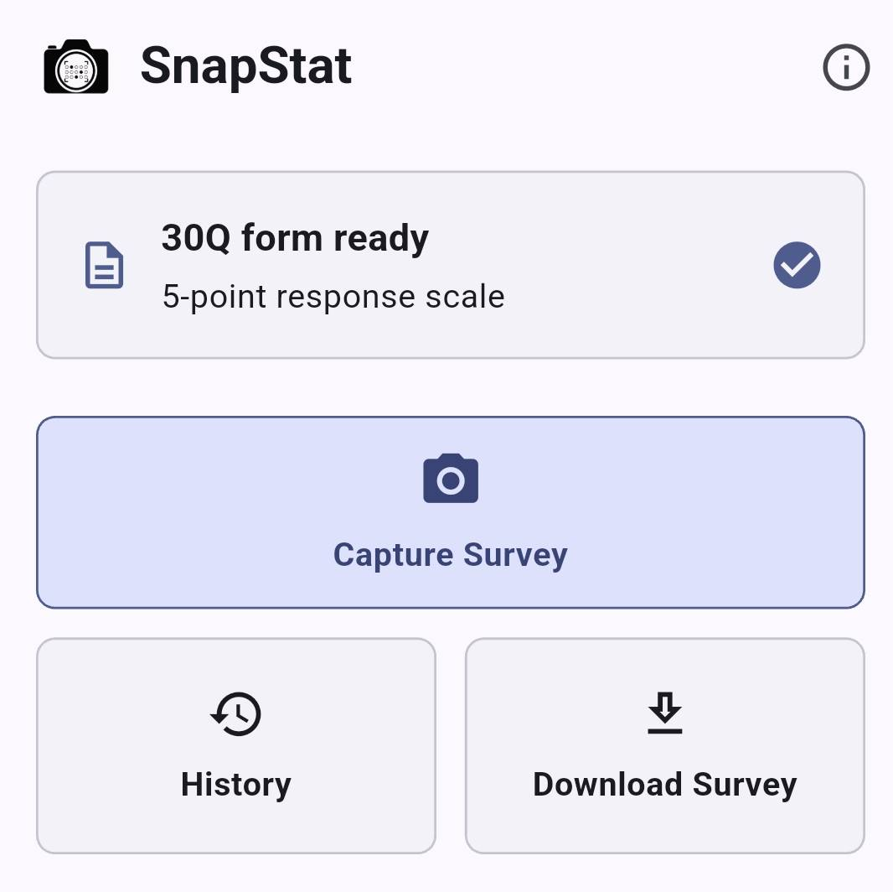
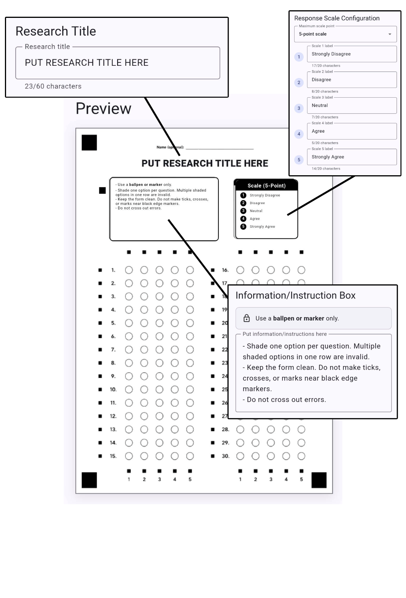
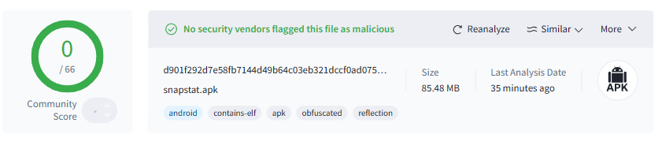

Download a survey form
Generate a printable 30-question form with the response scale, research title, and instruction box prepared for scanning.
Paper survey scanner
SnapStat helps users download a ready survey form, capture responses, review every answer, and export organized reports with graphs.

What the app does
Generate a printable 30-question form with the response scale, research title, and instruction box prepared for scanning.
Use the camera scanner, preview the captured sheet, and let SnapStat read the shaded answers with row and column alignment markers.
Check individual responses, rename records, edit answers when needed, and keep invalid or uncertain answers visible.
Create Excel and Word reports with tallies, graphs, means, standard deviation, categories, and interpretation.
Custom paper setup
SnapStat lets users prepare the title, response scale, and information/instruction box, then previews the exact paper form before it is downloaded.

Workflow
SnapStat keeps the survey process simple: prepare the form, collect answers, scan the sheet, confirm the results, then export.
Download and print the SnapStat survey form.
Respondents shade one answer per question using ballpen or marker.
Capture the form with all four corner squares visible.
Review the tally, individual responses, and export the report.
Printable form
The downloaded form uses corner squares, row markers, column markers, and a calibration mark so the scanner can align the paper and read the shaded bubbles more consistently and accurately.
Safety check
The SnapStat APK has been scanned with VirusTotal before release. The latest report shows 0 detections, indicating that no participating security vendors flagged the file as malicious.

Scan instructions
Install SnapStat
Install the current app version on an Android device. Keep the app local to your phone, then export files only when you choose to share them.